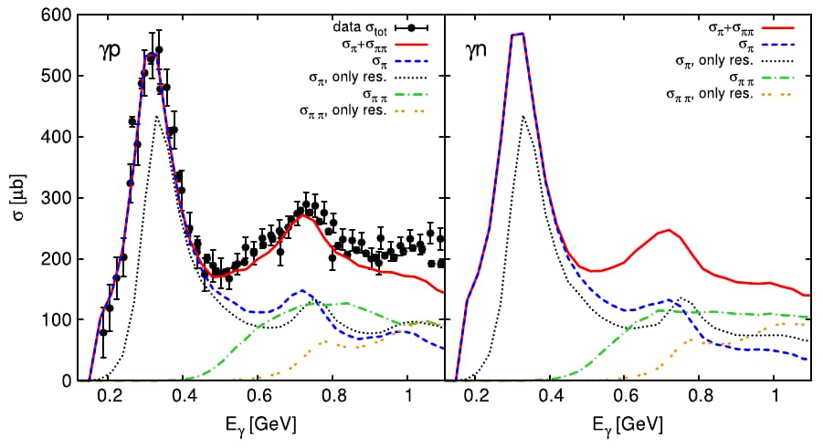
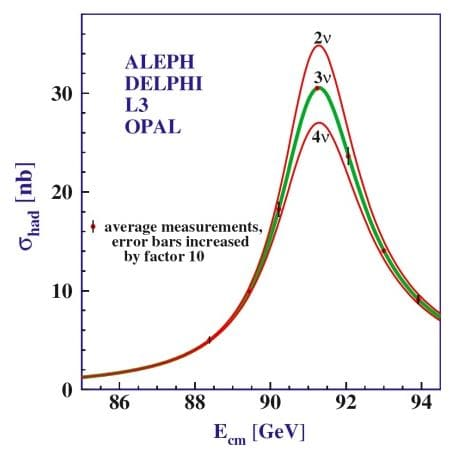

Day 24 - Resonance + Help Session#

Announcements#
Homework 5 extended to this Friday.
Homework 6 due this Friday; may request extension up to a week if needed.
Homework 7 posted, but will be on time
Midterm 2 is coming up! Project question will be Ex 0; new turn in process; more details to come.
Midterm 1 is graded; posted - Ex 0 is being graded now; will be posted with feedback by the end of the week.
Friday’s Class: Mihir will lead a homework help session - depending on your needs. Vote at end of class.
Thank you for your patience and understanding these last two weeks.
Reminders#
We started to solve the forced harmonic oscillator equation:
We examined the case of a sinusoidal driving force:
There’s a complimentary case where the driving force is a sine wave:
Reminders#
We combined the two equations into a complex equation using these identities:
The resulting equation is:
Notice that there’s a homogeneous part (\(z_h\)) and a particular part (\(z_p\)).
Reminders#
The homogeneous part is the solution we’ve found before with the general solution:
where \(r = -\beta \pm i \sqrt{\omega_0^2 - \beta^2}\). In the case of a weakly damped oscillator (\(\beta^2 < \omega_0^2\)), we have:
These solutions die out as \(t \to \infty\). They are called transient solutions.
Solving the particular part#
The particular part is the solution to the driven harmonic oscillator equation:
Assume a sinusoidal solution (frequency, \(\omega\)) of the form: $\(z_p(t) = C e^{i \omega t}\)$
where \(C\) is a complex number. Then, we have:
Amplitude of the particular solution#
We want to convert this to polar form:
where \(A\) and \(\delta\) are real numbers. We use the complex form to compute the magnitude of the amplitude:
Clicker Question 24-1#
We found that the square amplitude of the driven harmonic oscillator is:
When is the amplitude of the driven oscillator maximized?
When the driving frequency (\(\omega\)) is far from the natural frequency (\(\omega_0\))
When the driving frequency (\(\omega\)) is close to the natural frequency (\(\omega_0\))
When the damping (\(2\beta\)) is weak
When the damping (\(2\beta\)) is strong
Some combination of the above
Finding the phase#
With,
then we can compare the complex forms:
Both \(f_0\) and \(A\) are real numbers, so the phase \(\delta\) is the same phase as the complex number:
The Particular Solution#
Let’s return to the particular solution:
So we get solutions to both driven oscillators:
These are the steady-state solutions.
They persist as \(t \to \infty\) and oscillate at the driving frequency \(\omega\).
The Full Solution#
Here, \(x_h(t)\) is the transient solution and \(x_p(t)\) is the steady-state solution.
For weakly damped oscillators, the transient solution can be written in the form:
where \(A_{tr}\) and \(\delta_{tr}\) are real numbers and are the amplitude and phase of the transient solution. Both are determined by the initial conditions.
where \(A\) and \(\delta\) are real numbers and are the amplitude and phase of the steady-state solution.
The Full Solution#
The transient plus the steady-state solution is the full solution:
As \(t \to \infty\), the transient solution dies out and the steady-state solution persists.
where
Resonance#
The amplitude of the steady-state solution is:
We change \(\omega_0\) and observe how the amplitude changes.

Achieving resonance#
The denominator of the equation controls the amplitude:
Case 1: Tune \(\omega_0\) to be close to \(\omega\). Car Radio tuning
With \(\omega_0 = \omega\), the amplitude is:
Achieving resonance#
The denominator of the equation controls the amplitude:
Case 2: Tune \(\omega\) to be close to \(\omega_0\). Pushing a swing
Find the \(\omega\) that maximizes the amplitude by taking the derivative with respect to \(\omega\):
Resonance is Not Just Classical#
The amplitude of the driven oscillator near resonance:
In particle physics, the Breit-Wigner formula gives the cross section near a resonance:
Same structure. The substitutions are: \(M \leftrightarrow \omega_0\) (resonant mass/frequency) and \(\Gamma \leftrightarrow 2\beta\) (decay width / damping). The uncertainty principle connects width to lifetime: \(\Gamma = \hbar / \tau\).
Narrow peak \(\Rightarrow\) long lifetime. Broad peak \(\Rightarrow\) short lifetime.
The \(\Delta(1232)\) Resonance#

Cross section (probability) vs. energy for \(\pi^+\) scattering off protons.
Seeing the \(\Delta(1232)\)#
Shoot \(\pi^+\) (positive pions) at protons and vary the energy.
Measure how often they interact: this gives the cross section.
As the center‑of‑mass energy \(\sqrt{s}\) increases, the cross section suddenly spikes.
This sharp peak occurs at $\(\sqrt{s} \approx 1232~\text{MeV},\)\( and is the signature of the \)\Delta(1232)$ resonance.
What the Peak Tells Us#
The position of the peak gives the \(\Delta\) mass: $\(M \approx 1232~\text{MeV}/c^2.\)$
The width of the peak (how spread out it is in energy) is $\(\Gamma \approx 117~\text{MeV}.\)$
A narrow peak ⟹ longer‑lived state; a broad peak ⟹ very short‑lived state.
From the width, we can estimate the lifetime: $\(\tau \approx \frac{\hbar}{\Gamma} \sim 5.6 \times 10^{-24}~\text{s}.\)$
The \(\Delta^{++}\) State#
Around the peak, the proton + \(\pi^+\) system briefly forms a new state: $\(\pi^+ + p \rightarrow \Delta^{++} \rightarrow \pi^+ + p.\)$
The \(\Delta^{++}\) has:
Mass \(M \approx 1232\) MeV/\(c^2\),
Very short lifetime \(\sim 10^{-23}\) s,
Main decay: \(\Delta^{++} \to p + \pi^+\).
We never “see” the \(\Delta^{++}\) directly; we infer it from this enhanced scattering.
Resonance as a Driven Oscillator#
Think of the \(\pi^+ p\) system like a driven oscillator:
Driving frequency ⟺ collision energy \(\sqrt{s}\),
Natural frequency \(\omega_0\) ⟺ resonance energy (1232 MeV),
Damping \(\beta\) ⟺ decay width \(\Gamma\).
At \(\sqrt{s} = 1232\) MeV, the system hits its resonance and the amplitude (cross section) is largest.
Just as you can read off \(\omega_0\) and \(\beta\) from an amplitude‑vs‑frequency curve, you read off:
\(M\) from the peak position,
\(\Gamma\) from the peak width.
Why This Matters#
The \(\Delta(1232)\) is an excited state of the nucleon, made of the same quarks arranged differently.
It is a textbook example of how:
Short‑lived states show up as resonance peaks in cross sections.
Lifetimes and internal structure can be extracted from scattering data.
This is the same basic idea used later for heavier resonances, like the Z boson.
The Z Boson: Resonance - Counting the Universe#

The Z Boson at LEP#
At the LEP collider at CERN, electrons and positrons were collided at different energies.
When the total energy matched the Z boson mass, the production rate jumped.
On a plot of event rate vs. energy, this shows up as a tall bump (a resonance).
The center of this bump gives the Z mass: $\(M_Z \approx 91.19~\text{GeV}/c^2\)$
LEP recorded about 17 million Z decays.
Mass and Width of the Z#
The peak position of the bump tells us the Z mass: $\(M_Z \approx 91.19~\text{GeV}/c^2\)$
The width of the bump tells us how quickly the Z decays: $\(\Gamma_Z \approx 2.495~\text{GeV}\)$
Narrow bump ⟹ long‑lived particle (few ways to decay).
Broad bump ⟹ short‑lived particle (many ways to decay).
What Determines the Width?#
The Z can decay in many ways:
Into quark–antiquark pairs (hadrons),
Into charged lepton pairs (\(e,\mu,\tau\)),
Into neutrino–antineutrino pairs.
Each allowed decay channel adds a bit to the total width \(\Gamma_Z\).
More decay channels ⟹ the Z disappears faster ⟹ the bump gets broader.
So the measured width \(\Gamma_Z\) encodes all possible Z decays.
Neutrinos and the Z Width#
Each neutrino type gives a channel:
\[Z \rightarrow \nu_i \bar{\nu}_i\]If there are \(N_\nu\) different light neutrino types, the width scales with \(N_\nu\).
Physicists predicted:
2 neutrinos ⟹ smaller width,
3 neutrinos ⟹ some width,
4 neutrinos ⟹ noticeably larger width.
By precisely measuring the Z lineshape, LEP could count how many neutrinos contribute.
What LEP Found#
LEP measured the Z resonance shape extremely precisely.
The observed total width:
\[\Gamma_Z \approx 2.495~\text{GeV}\]matches the prediction for 3 light neutrino types.
A fourth light neutrino would have made the peak clearly wider than what LEP saw.
Conclusion:
There are three light neutrino generations.
This matches the three known generations of quarks and leptons.
Big Idea#
A resonance peak (like the Z) is not just a pretty bump:
Peak position ⟹ particle mass.
Width ⟹ particle lifetime and number of decay channels.
By studying the shape of the Z boson resonance, LEP physicists learned:
The mass and lifetime of the Z.
That nature has three generations of light neutrinos.
Resonance physics let us count how many generations of matter our universe has.
HW6 Exercise 1: Morse Potential as an SHO#
If the potential has a local minimum, we can often find SHO approximation for that potential near the local minimum.
The Morse potential is a convenient model for the potential energy of a diatomic molecule. The potential is a radial one and thus one-dimensional. It is given by,
where the distance between the centers of the two atoms is \(r\), and the constants \(A\), \(R\), and \(S\) are all positive. Here \(S<<R\).
1a. Sketch (or plot) the potential as a function of \(r\).
HW6 Exercise 1: Morse Potential as an SHO#
1b. Find the equilibrium position of the potential, i.e. the position where the potential is at a minimum. We will call this \(r_e\).
1c. Rewrite the potential in terms of the displacement from equilibrium, \(r = r_e + x\). Expand the potential to second order in \(x\).
1d. Find the effective spring constant, \(k\), for the potential near the minimum. What is the frequency of small oscillations about the minimum?
HW6 Exercise 3: Toy Potential#
Consider a toy potential of the form,
where \(U_0\), \(R\), and \(\lambda\) are all positive constants and the domain of the potential is \(0<r<\infty\).
3a. Sketch (or plot) the potential as a function of \(r\).
HW6 Exercise 3: Toy Potential#
3b. Find the equilibrium position of the potential, i.e. the position where the potential is at a minimum. We will call this \(r_e\).
3c. Rewrite the potential in terms of the displacement from equilibrium, \(r = r_e + x\). Expand the potential to second order in \(x\). What is the effective spring constant, \(k\), for the potential near the minimum? What is the frequency of small oscillations about the minimum?